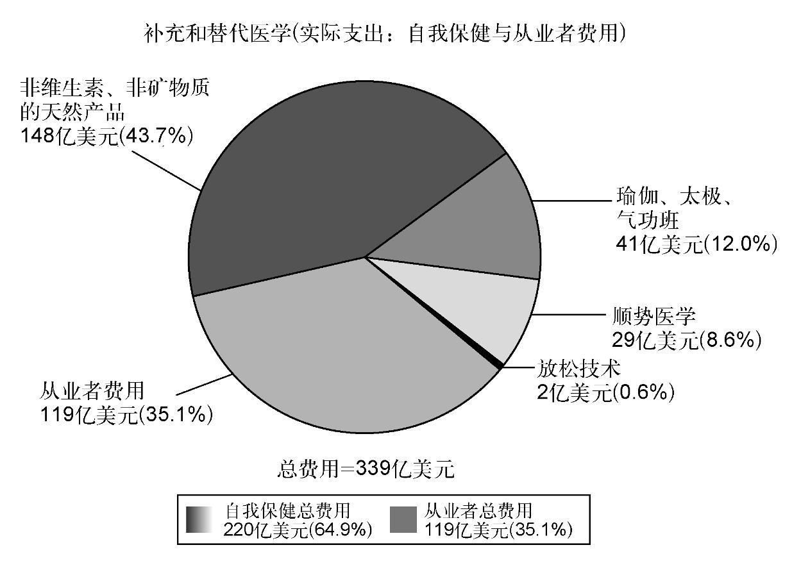

研究表明，至少有半数的癌症患者在常规医学之外还求助于补充或替代医学（有人怀疑，余下的人群中还有很多根本没有告诉我们）。这些医学的形式各式各样，包括少数族裔患者使用的传统疗法。尽管“补充”和“替代”这两个词有时可以互换使用，但还是应该区分一下所谓主流医疗之外的这两种不同的方法。因此，我会把那些旨在以支持的形式与常规疗法同时进行的称为补充医学。芳香疗法就是一例，它在根本上与患者继续其常规疗法并不冲突。实际上，芳香疗法有助于提高治疗依从性，或是降低对泻药或止痛药等额外药物的需求。除了芳香疗法等准医学疗法之外，主流医疗保健和其他“治疗师”还会提供针灸和顺势疗法等治疗。另一方面，替代医学旨在取消主流疗法，代之以常规医学认为在最好的情况下也不过是未经检验，在最糟的情况下还可能是有害的疗法。在实践中，不可能把各种治疗严格地归类为补充疗法或替代疗法，因为一个患者可能会在接受常规治疗的同时使用某种药物或疗法，而另一个患者可能会用同样的药物或疗法来取代常规治疗——区别在于意图和内容，两者兼而有之。
世上有大量的替代和补充医学，彼此各不相同，包括顺势疗法、针灸、各种饮食疗法、草药、芳香疗法，还有诸如水晶疗法、观想，以及少数族裔使用的传统疗法等等。对这些疗法一一详细分析超出了本书的范围，因此我会尝试选择一些例子，来总结一下补充和替代疗法与癌症治疗之间的相互作用和影响。在此之前，可以来感受一下这些疗法的使用范围之广、规模之大。虽说各国情况不同，但它们在美国的使用或许能够代表发达世界的普遍情形。由于美国的开支很容易量化，我会分类讲解美国国立卫生研究院提供的近期数据。标题数字显示，2007年，8 800万美国人在补充或替代医学上花费达339亿 美元之巨。这在美国的全部自费医疗开支中占比超过10%。此外还有230亿美元花在了维生素和矿物质补充剂上。考虑到美国公民面对的巨额医疗账单，他们会另外花这么一大笔钱，显然非常惊人。按照2007年的汇率，这可以为整个英国人口提供大约六个月的医疗保健。这些数字显然与总支出有关，而不只是由癌症患者花的钱；然而，它们的确能让人真切感受到这些治疗的使用范围之广。类似的开销存在于所有的工业化国家。这些可是世界上教育最发达的国家，如前所述，它们一般都会提供医疗保健服务，让大多数人得以活到老年，那么为什么它们的公民会花费如此巨额的钱款在额外治疗上，其中大多数根本未经证明？显然，在不太富裕的国家，部分人口或许只能负担得起传统疗法，因而可能是不同的力量在起作用。
在继续讨论这个问题之前，有必要仔细研究一下钱到底花在了什么地方。我还是会使用美国的数字，虽说其他地方的分摊方式可能不大一样，但我认为，这可以让我们感受到人们想要的到底是什么。如果我们能够理解这一点，或许就有助于解释上面的矛盾。
美国报告中最大的一类是“非维生素、非矿物质的天然产品”。这些想必是各种各样的草药——上文已经提到，在大约230亿美元的维生素补充剂和硒等矿物质的开支中，不包括 这一项。还有41亿美元花在专注心理健康的技术上，无论其内容是否包括像瑜伽这样的运动。显然，这些是否真的该归于此类还值得商榷，因为个人的动机很明确——这让他们感觉良好。这本身显然就是一个好处，我觉得再讨论下去就没什么必要了。同样的理由也适用于花在身心放松技术上的2亿美元开支。

图27 2007年美国补充和替代医学的开销
余下的大部分，要么是从业者费用（119亿美元），要么是顺势疗法费用（29亿美元，尚不清楚这只是“药物”本身的数字，还是包括从业者费用在内的总成本）。无论如何，像美国这样爱打官司的社会，如此巨额的花费实属惊人。对于常规医学的从业者来说，通往从业执照之路漫长又关卡重重。任何获得批准的药物都经过了严格的审批程序以证明其药效、安全性，以及目的适用性。因此，从业者和使用的产品都有严格监管。无论是从业者还是药物和设备的销售商，任何人敢越雷池一步，必将受到严厉的处罚；任何人不按预期标准执行，都会招致法律的制裁，往往还会伴随着经济处罚。在常规医学中，制药公司在没有证据表明药物在合理的时间内有效的情况下，按照法律，就不得销售，哪怕只是哮喘药物。
对于大多数替代和补充医学来说，大多数国家都没有这样的检验。监管要么缺失，要么被包含在“专业”内。没有对比方说顺势疗法药物进行药效检验。这些专业的从业者为何不受制于这些基本的规则，让人无法理解。就算采用的是不同的规则，在根据某种货物或服务具有某种特性而收取费用的其他行业，如果该项商品或服务没有达到广告宣传的功能，也会受到法律的处罚。
事实是，这些疗法的提供者似乎相信它们都有效用，患者也如此认为。因此，替代和补充疗法实际上更像宗教而不是科学，这就在很大程度上解释了它们为何似乎享有法律豁免权，因为宗教本身在大多数国家也有着同样的法律特权。此外，临床试验中有一种众所周知的现象叫作“安慰剂效应”。盲法试验中的某些患者服用的是叫安慰剂的假药丸，他们常常也会体验到活性药物预期的良好效果（奇怪的是，有时还会体验到轻微的副作用）。这种效应往往十分可观，并且在很多方面是极为理想的——显然没有与药物相关的严重不良事件的风险。身体在进行自我治疗。因此，很显然，如果替代医学“从业者”和患者同样坚信某种疗法有效，它往往就会奏效。这说明它是一种可靠的做法吗？我觉得并非如此——我认为这些疗法无论是不是医学，都应该与其他任何产品一样，接受同样的效果检验。
此外，并不是说无效的产品就不会造成伤害——这取决于它如何改变了患者的治疗。比方说，如果顺势疗法被用来治疗软组织损伤等轻微的自限性病症，显然不大可能造成长期的伤害。如果（像某些顺势疗法的支持者倡议的那样）用它取代了治疗癌症、艾滋病或结核病的标准疗法，那么当患者放弃了某种更有效的治疗，病情显然会恶化。
正如已经讨论过的那样，评估任何药物，无论是常规药物还是其他种类，黄金标准做法都是对照试验。这些做法广泛应用于评估常规医学，但也被用来测试诸如顺势疗法和针灸（对照组是假针灸组——针被插入，却是在“错误的”位置）等技术的补充或替代医学。
顺势疗法的基础是“以毒攻毒”。从业者取用能够引发恶心等症状的化合物，随后将其活性成分依次稀释到原物质一个分子都不剩下的程度。支持者声称构成顺势疗法的“强力作用”在某种程度上把具有药效的特性“印刻”在了水分子上。其效果一般被认为是顺势疗法开始时采用的药剂所引发症状的反面——因此，上面这个例子所得到的药物可以用来治疗恶心。这样的一种治疗要想奏效，需要大量改造物理学、化学和组织生物学，而当前缺乏所有这些知识。就算我们承认自己关于这些学科的知识很不完善，希望能有临床试验的证据证明其药效也绝非不合情理。如果有令人信服的药效试验证据，那么显然就需要重新审视基础的科学正统来适应新的证据。因此，我们需要考察顺势疗法的临床试验证据。
实际上已经进行过一些顺势疗法的对照试验了。2005年，备受推崇的医学期刊《柳叶刀》（The Lancet ）发表了一篇文章，分析了包含安慰剂在内的110个顺势疗法试验的结果。这些试验与110个类似的常规医学试验（在顺势疗法文献中称其为对抗疗法，意思是“与疾病不同”）进行了比较。《柳叶刀》的文章得出结论说，在证实顺势疗法的相干效应的所有证据中，没有一种不能用安慰剂效应来解释。相反，常规试验能够表明，在同样的条件下，常规药物的效果远远超过安慰剂。因此，顺势疗法似乎在“替代”类别里坐稳了，因为其从业者鼓吹的正是如此：常规医学的一种替代品。在没有证据表明存在切实好处时，特别是在顺势疗法宣传可以应用于所有疾病，其中包括有致命危险的哮喘、结核病以及艾滋病的情况下，这看来是一种不负责任的观点。关于顺势疗法的这种观点得到了世界卫生组织等机构的支持，该组织近来发布了一个警告，称使用顺势疗法治疗诸如结核病和疟疾等疾病非常危险，该警告非常明确地说，如此可能会付出生命的代价。因此，从任何一个层面上来说，在我们审视顺势疗法的“科学”时，若以传统科学为尺度，它显然问题重重——其作用方式缺乏合乎逻辑的物理基础，药效方面也没有令人信服的试验证据。尽管缺乏证据，顺势疗法仍可以通过英国的国家医疗服务体系来获得，全世界也有数百万人相信它的疗效，其中包括威尔士亲王 [6] 。
那么，为什么会有这么多患者使用这些治疗？大多数人对科学的理解都非常粗略，往往会把科学家和替代疗法从业者的说法看作是同样合理的选择。这种观点独独限于生物学——比方说，没有人愿意在工程或开飞机上使用“替代”方法；他们会严格遵守空气动力学定律，坚持采用受过培训的飞行员。我认为在很多乃至大多数情况下，人们只是感到绝望，想在二者身上都下重注。穷尽了常规治疗方案的患者往往会转向这些疗法，显然很容易被人利用。这些治疗的极端例子往往会要求患者去其他国家治病，那里对这种疗法的监管没有美国或欧盟等地那么严格。
患者经常还会采用不寻常的饮食疗法。其基本原理常常会把因与果混为一谈，如果那些疗法还谈得上有原理的话。这些饮食的基础逻辑大多是这样的：饮食中缺乏X，患上某些种类癌症的风险就会增高（可能），因此，服用X就可以恢复平衡，从而治疗癌症。患者于是就开始服用比如维生素或矿物质补充剂。作为一项建议，这至少还是可以验证的——我们可以对有关的补充剂做试验，看看它是否会影响患者的治疗结果。抗癌饮食中的另一个常见的主题是将饮食中的某个具体成分作为众矢之的，例如动物脂肪，潜在的逻辑是很多常见的癌症都与饮食中的动物脂肪过量有关，因此停止摄入动物脂肪便可治疗癌症（不太可能）。只需在肺癌里把“动物脂肪”换成“吸烟”一词，就能说明这种做法徒劳无益——如果只靠戒烟就能治疗肺癌，就没有几个人会死于此病了。遗憾的是，对于大多数肺癌可以预测到的严峻结果来说，戒烟的作用极其有限。同样，显然没有任何证据表明这种“减法”饮食能够影响癌症存活率。我在诊所患者身上观察到的另一个最近的例子是说吃糖很不好，因为这会给癌症“加油”。因为所有复合碳水化合物在被吸收之前都会在消化道内被分解为糖类，这个疗法成立的可能性微乎其微，尤其是考虑到肝脏和胰腺等器官都在密切调节着血液的含糖量。
尽管存在这些逻辑缺陷，并且缺乏证据，患者却往往会采用新的饮食来应对癌症的诊断结果，他们经常会放弃喜欢了数十年的食物，采用某种据称有“解毒”或“治疗”特性的饮食，或是添加补充剂来“提升”身体的防御机制。极端情况下，从业者和拥护者往往会以近乎宗教的热情来鼓吹这些方法。确实，坚守这些教条在很多方面都很像宗教仪式，认为拒绝接受和自我牺牲有可能会换来回报，提升幸福。和宗教仪式一样，无需药效的直接证据——相信它有用就足够了。此外，如果此方法未能奏效，则可以被解读为没有努力实践养生法，而不是它们本身缺乏疗效。
1990年，我们一行三人（两个肿瘤科医生和一个精神科医生）走访了墨西哥蒂华纳市的热尔松中心。热尔松方案基于一套古怪的“解毒”饮食（严格素食，水果和蔬菜的带肉果汁，不加盐）以及坦白来说相当怪异的做法（定期用新鲜咖啡灌肠）。马克斯·热尔松博士研发出这种饮食法来治疗包括糖尿病（他治疗过阿尔伯特·史怀哲 [7] ）和结核病在内的各种病症。具有讽刺意味的是，他因为鼓吹治疗糖尿病的饮食疗法而被美国驱逐出境，当时对糖尿病患者采用的是高脂肪、低碳水化合物的饮食。后来证明，高纤维、低脂肪的“热尔松”饮食法实际上是一种很好的糖尿病治疗法，但人们意识到这一点，已经是多年之后了。这的确证明了有必要以科学的方式来评估各种疗法，评估以后，便证明了低脂肪、高碳水化合物饮食法对治疗糖尿病的价值。然而，热尔松在被美国驱逐出境后继续鼓吹治疗一系列其他疾病的疗法，其中包括癌症、心脏病和关节炎。1947年和1959年，美国国家癌症研究所进行了两次调查，评估热尔松养生法是否对癌症结果有任何影响，两次的结论都说它没有令人信服的疗效证据。1990年，我们自己在审阅了由该中心挑选的病例之后，也得出了同样的结论，发表在医学期刊《柳叶刀》上。该中心的患者无疑相信自己从中受益了，并且由于上文所列的原因，他们感觉能更好地掌控自己的命运，在某种意义上获得了附带的心理益处。然而，这也有负面的影响，有些患者在这些治疗中投入了大量精力和信仰，在病情恶化时难免会感到他们无论怎样努力都是徒劳。这本身往往就很痛苦了，有时还会迫使他们错误地认为，只要坚持到底，就一定会有所改善，因而更极端地坚持某种养生法。
热尔松疗法之类的饮食法还有另一个问题。尽管从某些方面来说，这种饮食法（至少要除去咖啡灌肠）可以被看作是健康的，它却有可能并不适合某些类型的癌症患者。例如，胰腺癌患者的体重往往会迅速降低。因此，遵循一种往往会导致健康个体降低体重的饮食法，对于体重降低也是迫在眉睫的一个问题的人来说，实际上是有害的。同样，如上文所述，很多患者会把常规医学和替代疗法“混搭”起来。化疗等疗法可能导致消化问题并促使体重降低。因此，极高纤维、总热量却相对较低的饮食在这种情况下显然并不理想。替代疗法的从业者当然会说，这里的问题在于常规疗法而不是替代疗法。如果这些疗法受制于适当的审查并证明有效，这句话本来也可接受。对于热尔松疗法来说，虽然已经应用了90年，有很多已经发表的临床病例报告和学术界的探讨述评，却仍然没有一个正式发表的临床试验。正如药物那样，我认为为这类疗法安排试验是倡导者的责任，就像制药公司必须证明其产品的药效才可以获得批准一样。或许的确有患者从“替代”饮食法中获益了，但目前还是缺乏证据。
与替代饮食法密切相关的是基于维生素和矿物质或混合草药（有时称作“食疗品”）的营养补充剂。与热尔松治疗师之类的群体鼓吹的彻底改变生活方式相比，这些疗法可能更易于进行常规临床评估。最简单的饮食补充是服用维生素或矿物质。维生素［vitamins，复合词“vital amines”（“维持生命所必需的胺类”）的派生词］是微量存在于食物之中的化学物质，对于机体维持正常功能必不可少。维生素C就是个很好的例子，它来自各种水果，特别是柑橘类。缺乏维生素C会导致古代水手的头号灾难——坏血病，这种疾病的症状包括伤口愈合障碍，组织脆弱、容易瘀伤流血，牙龈出血和牙齿脱落，即身体所谓的“结缔组织”无法正确地连接各部件。因此，维生素C显然对生命至关重要，但如果体内有足量的维生素C，服用更多是否有益？诺贝尔奖获得者莱纳斯·鲍林坚信，所谓的“超大剂量”维生素是有益的，他大力鼓吹用这种做法来治疗从普通的感冒到癌症等各种疾病（应该指出，他获得的是诺贝尔物理学奖，而不是医学奖）。现在我们有了一种很容易检验的假说——维生素C可以做成药片，像其他任何药物那样接受评估。在各种环境下充分评估之后，答案却是掷地有声的否定：超过正常水平的维生素C饮食补充无助于战胜癌症（或其他任何疾病）。尽管如此，缺乏药效的铁证还是无法阻止替代疗法从业者继续鼓吹该药剂的使用，随手上网一搜，就能看到它们的广告无处不在。
矿物质是更简单的物质，但对它们进行试验也非常困难。比方说，硒存在于蔬菜之中，还是身体组织的必要成分，参与维护上皮细胞膜，即机体各种管道和腺体的内膜细胞的完整性。正是这些细胞引发了常见的癌症，因此，硒看来是饮食补充的一种潜在的候选物。进一步研究表明，硒水平较低的人口患癌的风险较高。这激起了癌症患者服用硒补充剂的各种试验，一项著名的皮肤癌研究表明，补充额外的硒的患者患上另一种癌症——前列腺癌——的风险较低。问题在于，这并非此项试验的研究目的，但无论如何，这已经足够促使那些担心自己前列腺的男性大量摄入硒了。为了确认效果，美国举行了一次名为“SELECT”的大型试验，旨在调查两种补充剂——硒和维生素E。该试验招募了30 000名男性，以双盲的方式分配给他们一种或另一种补充剂、两种全有或两种皆无，但后来数据与安全监察委员会叫停了这个试验。到此时为止，研究人员跟踪这些男性的平均时间已有五年。该委员会发现，不但两种药剂均没有任何令人受益的迹象，更麻烦的是，硒有可能让患上前列腺癌的风险轻微上升，而出乎意料的是，维生素E也有可能让患上糖尿病的风险上升。
然而就连这也不见得能给这个主题盖棺定论。在北美，膳食中的硒含量相对较高，因此与膳食中的硒含量较低的欧洲（差异与蔬菜所生长的土壤的硒含量有关）相比，额外摄入硒可能没什么好处。此外，硒可以以纯粹的化学品形式，或是与有机化合物相联系的所谓“复合物”的形式来提供，后者更像是从食物中获得的形式。因此，我们可以确定的是，SELECT试验所使用的药片形式不能预防北美男性的前列腺癌。目前仍在用这两种药剂进行其他试验——例如，我们自己的小组正在研究硒和维生素E对早期膀胱癌（这也与饮食中缺乏这两种物质有关）男性和女性患者的作用，以观察补充剂是否可以防止癌症的复发。
我个人的观点是，在发达世界，大多数情况下多数膳食都提供了足量的大多数维生素和矿物质，特别是考虑到过度摄入热量的势头还在不断增长。在此背景下，补充剂的任何影响可能都是微小的，因为大多数膳食里的含量已经超出了人体真正需要的水平。这正是明确的试验证据如此难以获得的原因所在。就像生活中的很多事情一样，起初看起来相当简单的事情，越仔细端详，就会变得越复杂。这种不确定性当然为补充剂市场增添了活力——还有什么比服用额外的“天然”维生素和矿物质更安全的呢？如果那些穿白大褂的人（如今我们大多数时候当然不再这么穿着了）对这一点不确定，何不服用这些药剂以防万一呢？
草药又如何呢？与化学生成的粗糙药品相比，从更加“天然”的意义上来说，它们当然颇具吸引力。然而，这种逻辑在本质上存在缺陷——自然界里没有什么东西是天生“美好”的——随便看看关于野生动物的电视节目就可以确认这一点。在这个语境之下，“天然”一词实际上没有什么意义——语境决定一切。比方说，肉毒杆菌中毒是一种令人非常难受的消化道感染，有时还会致命，但肉毒杆菌毒素却被用于让人看起来更“美丽”，作为一种药品，显然也相对安全。因此，药品比其“天然”来源要安全得多。如果某种草药疗法有疗效，那当然是因为它是一种药物（或者更准确地说，是很多药物的合剂，活性各不相同，副作用也多种多样）。草药自古便有也毫无神奇之处（仿佛使用的长久时间给它戴上了光环似的）。长期使用的天然疗法的好例子包括金缕梅（含有大量水杨酸，也就是阿司匹林）、罂粟（吗啡和二乙酰吗啡的来源）以及毛地黄。毛地黄是古代药物来源的一个好例子。一种用毛地黄叶子调制的饮品名为“什罗普郡茶”，几百年来一直被用来治疗所谓的“水肿病”——下肢积水，伴以呼吸短促，如今称之为心脏衰竭。后来20世纪的科学从中分离出活性成分——洋地黄生物碱（以该植物命名的一族化合物），其中最常使用的是地高辛。这些药物至今仍是治疗心脏衰竭的主要成分。但据我所知，如今没有人再用什罗普郡茶来代替地高辛了。
那么，草药类的癌症药物怎么样？好吧，首先，很多癌症化疗药物实际上就是草药提取物——用来治疗血癌和淋巴癌的长春新碱就来自长春花。用来治疗包括乳腺癌、前列腺癌和肺癌在内的多种癌症的紫杉烷类药物则来自紫杉的树皮和树叶，诸如此类。因此，对草药性质的研究一直是我们某些最有效药物的一个卓有成效的主要来源。同样，这些药物的天然源头并不是良好的草药——例如，吃紫杉叶既困难（它们的质地非常粗糙），也有可能致命——有用的治疗效果和致死之间只有一步之隔。
草药得到检验的研究有很多例子。我特别感兴趣的一个是起初叫PC—SPES（是前列腺癌—spes 的缩写，spes 是拉丁文，意为“希望”）的合剂。这种合剂据称来自一种“古老的”草药疗法，是作为“前列腺保健品”上市销售的。大约20年前，前列腺癌主流试验中碰巧同时在服用PC—SPES的患者显然从这种草药疗法中获益。抛开它的名字不谈，它的制造者并没有把它作为一种癌症疗法进行试验，而是当作一种食品补充剂获得批准。后来的实验室调查证实，PC—SPES的表现很像雌激素——严格地说，是一种植物雌激素。这让我们想起，雌激素类药物广泛用于前列腺癌的治疗，因而PC—SPES完全有可能具有抗前列腺癌的效果。对于患者服用这种合剂的详细研究证明，它对雄性激素水平以及前列腺癌标记物PSA会产生影响，后者与激素的作用基础相一致。临床和化学分析发表于《新英格兰医学杂志》（New England Journal of Medicine ），那大概是世上首屈一指的医学杂志了。
这篇文章的发表促成了在晚期前列腺癌患者中比较PC—SPES和一种名为己烯雌酚的真正雌激素的一次试验。试验开始了，但因为PC—SPES受到己烯雌酚的微小污染而被提前叫停。制造商“植物实验室”随即被美国的监管当局查封，此项研究便再无可能完成了。这个故事有些令人费解的方面。PC—SPES生产多年都没有过任何负面调查，原发表于《新英格兰杂志》的文章的分析中也没有发现己烯雌酚的污染。此外，就已经完成的这项试验而言，它证明PC—SPES优于己烯雌酚，这个结果与某些评论者认为的因己烯雌酚污染所致的临床效果相左。
PC—SPES等药剂的问题在于，它们只是作为食品而获批的，因此不像药物那样，必须经过种种严格评估。同样，制剂是草药提取物的合剂，让人不由得怀疑合剂中有多少成分是观察到的真实临床效果（其中包括深静脉血栓等已知的雌激素不良反应）所确实需要的。什罗普郡茶和地高辛的例子说明了潜在的研发路线。解开这个谜题当然要花多年时间和大量的医疗经费，还可能没有专利保护来让公司为这些成本筹集资金。因此，我们很可能永远都不会知道PC—SPES真正的活性成分是什么。此外，尽管该药剂看似有临床价值，却再也见不到了，虽说市面上有若干类似的药剂（名字各不相同，包括一种叫PC—HOPE的，让人直接联想到PC—SPES）并在患者中间广泛使用。这些PC—SPES的仿造品是否真的和原版一样，还是无从知晓。服用这些药剂的患者大多无人监督，关于剂量、不良反应等问题也没有成体系的文献资料。此外，因为这些都是草药合剂，即使各成分的分量都是一样的，也无法保证连续批次中实际活性成分的分量完全一样——侍弄过花园的人都知道，种在同一块土地上的植物每年都会发生变化。鉴于草药疗法的性质和当前的批准环境，我们很难看清前进的方向。因为“植物实验室”PC—SPES的遭遇，各公司不太可能在未来争相进行草药疗法的试验。同样，把一种草药合剂转变成常规药物的成本，以及有可能毫无专利的保护，也令人望而却步。制药业当然还会继续筛检有药用性质的草药，但后续研发的目的是取得单一的化学物质，而不是一种草药制剂。我怀疑这些制剂会永远停留在常规医学和替代医学从业者之间的灰色地带。这种情形令人遗憾，因为在槲寄生提取物一类的大量无效疗法中间，无疑会混杂着一些像PC—SPES一样的药剂，其活性有潜在的价值。
总之，在卫生经济中，补充和替代医学形成一项巨大而重要的经济活动。然而，大多数这类疗法的收益都缺乏直接的证据。
此外，在某些情况下，有充分的证据表明它们缺乏 收益。尽管如此，有很大比例的癌症患者仍然把这些疗法作为对其常规治疗的辅助（或在某些情况下取而代之）。在这些准医疗干预之外，还有另一个改变饮食结构、补充剂和草药疗法的领域，它们同样基本上没有什么证据基础。理解这些疗法的用途十分重要，因为它们可能会证伪癌症治疗试验的结果，也可能会干预常规治疗的结果，无论是使其更好（这种情况极可能很少）还是更差。